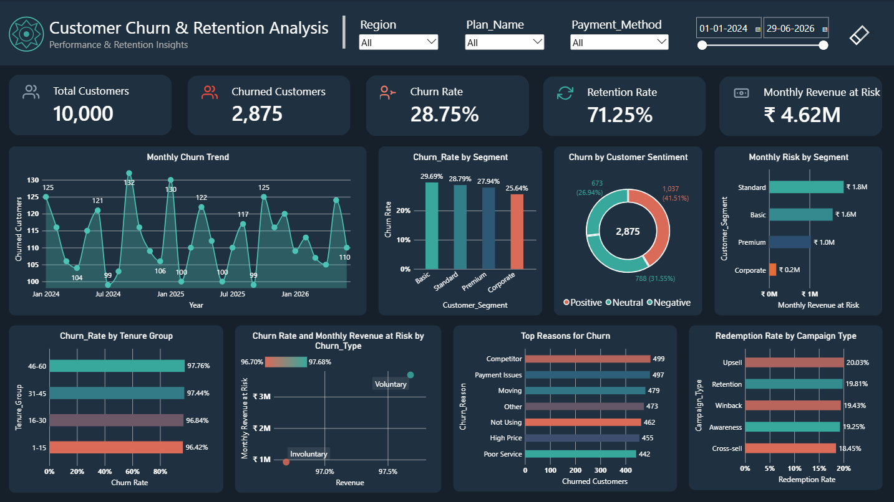

Customer Churn Analytics
Analyzed customer behavior, subscription patterns, service usage and churn factors to identify customer segments at higher risk of leaving.
Total Customers
10,000
Churn Rate
28.75%
Revenue at Risk
₹ 4.62M
Retention Rate
71.25%
Customer segmentation
Churn rate
Revenue at risk
Usage analysis
Churn reasons
Customer satisfaction